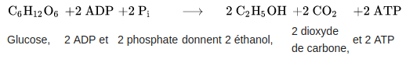

<section>
    <section>
        <h1>Fermentation</h1>
        <p class="fragment" data-fragment-index="1">La fermentation permet de transformer le liquide sucré en un liquide alcoolisé.</p>
    </section>

    <section>
        <h2>La chimie</h2>
        <div class="fragment" data-fragment-index="1">
                <div>Respiration cellulaire</div>
                
        </div>
        <div class="fragment" data-fragment-index="2">Concêtement:</div>
        <ul>
            <li class="fragment" data-fragment-index="3">
                <span>Multiplication des levures et colonisation du liquide: aérobie (consomation d'oxygène)</span>
            </li>
            <li class="fragment" data-fragment-index="4">
                <span>Respiration: production d'alcool et de CO2: anérobie (absence d'oxygène)</span>
            </li>
            <li class="fragment" data-fragment-index="5">
                <span>Ces réactions produisent de l'énergie</span>
            </li>
        </ul>
        <div class="fragment" data-fragment-index="6">
            <a href="http://univers-biere.net/br_levure.php" target="_blank">http://univers-biere.net/br_levure.php</a>
        </div>
    </section>
</section>